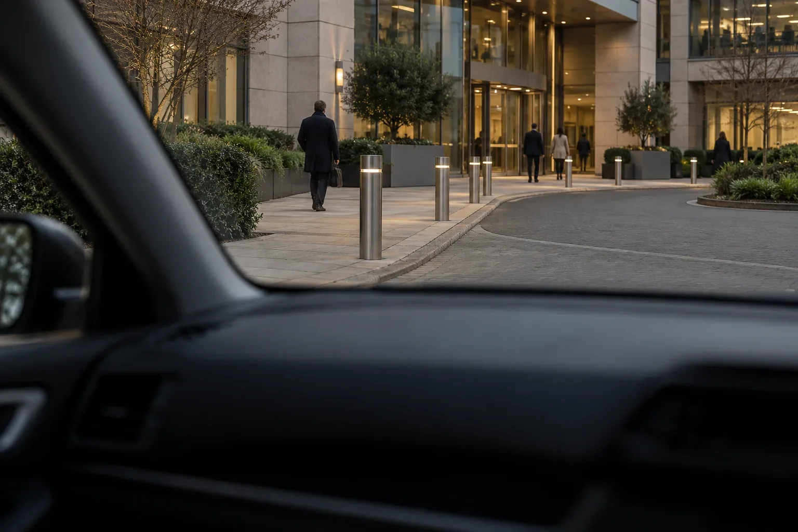

Hostile reconnaissance & counter-reconnaissance
Assess what could be learned from public information, approaches and observable activity. Controlled replication can inform protective measures and reporting arrangements.
04 / Specialist operational support
Add operational, technical or engineering depth where the engagement requires it. Palisade owns the client question, integration, quality and recommendations.
Discuss your requirementPalisade / Winchester · UK wide
Capability follows the task
Specialist inputs can support advisory, authorised assurance or preparedness work. Delivery roles, personnel, information handling and any required approvals are agreed before activity begins.
The examples below show relevant depth. They do not replace a defined scope or imply that every engagement needs every capability.
Assess what could be learned from public information, approaches and observable activity. Controlled replication can inform protective measures and reporting arrangements.

Assess exposure around sensitive activities, visits or personnel. Scope proportionate precautions and specialist support where the requirement warrants it.
Assess site exposure to uncrewed aerial systems and define protective requirements, incident procedures and detection/response considerations. Technical countermeasures require appropriate specialist and legal review.
Consider credible malicious disruption of important assets, utilities and supporting operations. Prioritise protection and preparedness according to consequences.
Trusted associates can add protective-security engineering, additional testing personnel, technical expertise or exercise/training capability. Palisade retains scope, methodology, integration, reporting and quality assurance.